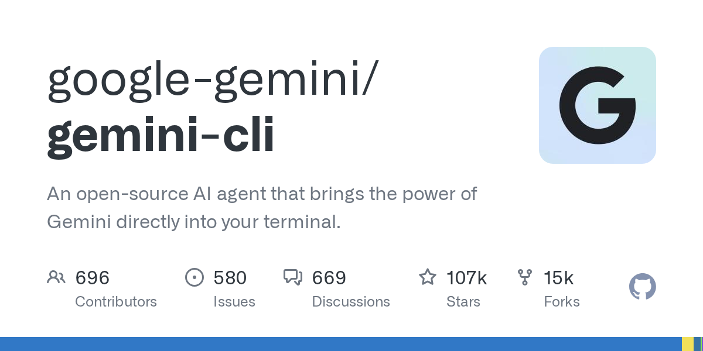

04 에이전트·툴링
메신저와 서버를 넘나드는 학습형 에이전트
“메신저 채널과 터미널을 같은 게이트웨이로 묶고, 하위 에이전트 병렬 실행과 예약 작업까지 넣은 점도 차별점이다.”
Weekly GitHub Brief
이번 주에는 에이전트를 여러 개 동시에 돌리거나, 플러그인으로 기능을 갈아끼우거나, 규칙과 기억을 붙여 오래 쓰는 도구가 많이 보였다. 단발성 코드 생성보다 수정과 검토, 작업 분배에 초점을 둔 저장소가 앞에 섰다. 인프라 쪽은 여러 AI CLI를 한 API로 묶거나, 모델 전환과 토큰 절감을 처리하는 중계기와 게이트웨이가 눈에 띄었다. 라이선스 경향은 공개 도구를 빨리 붙여 쓰기 쉬운 형태가 많아, 사내에서는 먼저 터미널형 에이전트를 한 팀에서 시험해 작업 분배와 재현성을 확인해 볼 만하다.

Editor's Pick
04 에이전트·툴링
“메신저 채널과 터미널을 같은 게이트웨이로 묶고, 하위 에이전트 병렬 실행과 예약 작업까지 넣은 점도 차별점이다.”
05 에이전트·툴링
“코드를 다시 뒤지기보다 그래프에 먼저 물어보게 만드는 방식이다. 연결마다 근거를 붙여서, 파일에 직접 적힌 사실과 도구가 추론한 연결을 구분해 보여준다.”
01 이번 주 급상승
“업무를 하나씩 넘기는 대신, 같은 지시를 여러 에이전트에 나눠 보내고 결과를 비교할 수 있다.”
이번 주 가장 뜨거웠던 저장소 하나를 골랐습니다. 아래 섹션에도 그대로 실려 있습니다.
router-for-me/CLIProxyAPI
Claude Code, Codex, Gemini, Grok Build 같은 CLI 기반 도구를 공통 API로 감싸는 프록시 서버다.
“이 저장소는 여러 CLI 계정을 한곳에 모아 OpenAI, Gemini, Claude, Codex, Grok 호환 API로 내준다. 기존 클라이언트나 SDK를 크게 바꾸지 않고 붙일 수 있다. 계정을 여러 개 둘 때는 라운드로빈으로 요청을 나눠 보낸다.”
★ 51,970이번 주 +827GoMIT 사내 사용 가능릴리스 v7.3.4 (09.15)최근 활동 09.16테스트예제AGENTS.md

지난 7일 동안 스타가 빠르게 늘었거나 새로 등장해 주목받는 저장소입니다.
stablyai/orca
여러 코딩 에이전트를 한 화면에서 관리하는 데스크톱 도구다.
“업무를 하나씩 넘기는 대신, 같은 지시를 여러 에이전트에 나눠 보내고 결과를 비교할 수 있다. GitHub PR과 이슈, 프로젝트 보드를 앱 안에서 보고 바로 작업 트리를 열 수 있다. 검토 의견도 같은 화면에서 다시 에이전트로 보낸다.”
★ 69,538이번 주 +4,581TypeScriptMIT 사내 사용 가능릴리스 v1.4.203 (09.15)최근 활동 09.16테스트예제AGENTS.md

deepseek-ai/deepseek-harness
DeepSeek AI가 만든 오픈소스 에이전트 하네스다.
“이 저장소는 에이전트를 하나의 완성품으로 내놓기보다, 기능을 플러그인으로 나눠 조합하게 만든다. 기업 입장에서는 웹 검색, 문서 검색, 사내 시스템 연결 같은 기능을 따로 바꿔 끼우기 쉬운 구조다. 관심을 받는 이유는 이 유연성에 있다.”
★ 225,344이번 주 +8,016TypeScriptMIT 사내 사용 가능최근 활동 09.15AGENTS.md

DietrichGebert/ponytail
코딩 에이전트가 불필요한 코드와 의존성을 덜 만들도록 유도하는 도구다.
“코딩 에이전트가 널리 쓰이면서, 너무 많은 코드를 만든다는 불만도 함께 커졌다. 이 저장소는 더 똑똑한 생성보다 더 적은 생성을 목표로 삼는다. 이번 릴리스에서는 Cursor용 네이티브 훅을 넣어 실제 편집기 연동 장벽을 낮췄다.”
★ 139,391이번 주 +6,179JavaScriptMIT 사내 사용 가능릴리스 v4.10.0 (09.14)최근 활동 09.14테스트예제AGENTS.md

에이전트 프레임워크, MCP 서버, 코딩 보조, LLM 앱 개발 도구입니다.
NousResearch/hermes-agent
스스로 기술을 쌓고 이전 대화를 다시 활용하는 에이전트다.
“메신저 채널과 터미널을 같은 게이트웨이로 묶고, 하위 에이전트 병렬 실행과 예약 작업까지 넣은 점도 차별점이다. 많은 에이전트 도구가 노트북 앞의 대화에 머문다면, Hermes Agent는 원격 서버와 서버리스 환경에서 계속 돌리는 운영 방식에 더 가깝다.”
★ 245,870이번 주 +2,089PythonMIT 사내 사용 가능릴리스 v2026.9.14 (09.14)최근 활동 09.16테스트AGENTS.md

Graphify-Labs/graphify
코드와 문서, SQL 스키마, 설정 파일, PDF를 질의 가능한 지식그래프로 바꾸는 도구다.
“코드를 다시 뒤지기보다 그래프에 먼저 물어보게 만드는 방식이다. 연결마다 근거를 붙여서, 파일에 직접 적힌 사실과 도구가 추론한 연결을 구분해 보여준다. 벡터 저장소 없이 그래프 자체를 탐색한다.”
★ 118,049이번 주 +1,711PythonApache-2.0 사내 사용 가능릴리스 v0.9.62 (09.15)최근 활동 09.15테스트AGENTS.md

google-gemini/gemini-cli
Gemini 모델을 터미널에서 바로 쓰게 해 주는 오픈소스 AI 에이전트다.
“대화형으로만 쓰는 도구가 아니다. 스크립트에서 비대화식으로 실행할 수 있고, JSON이나 스트림 JSON으로 결과를 받을 수 있다. MCP 서버를 붙이면 GitHub, Slack, 데이터베이스 같은 외부 도구도 함께 다룬다.”
★ 107,006이번 주 +127TypeScriptApache-2.0 사내 사용 가능릴리스 v0.60.0 (09.15)최근 활동 09.15

추론 서빙, 런타임, 양자화, GPU 커널, 벡터 DB 등 모델을 돌리는 바탕입니다.
router-for-me/CLIProxyAPI
Claude Code, Codex, Gemini, Grok Build 같은 CLI 기반 도구를 공통 API로 감싸는 프록시 서버다.
“이 저장소는 여러 CLI 계정을 한곳에 모아 OpenAI, Gemini, Claude, Codex, Grok 호환 API로 내준다. 기존 클라이언트나 SDK를 크게 바꾸지 않고 붙일 수 있다. 계정을 여러 개 둘 때는 라운드로빈으로 요청을 나눠 보낸다.”
★ 51,970이번 주 +827GoMIT 사내 사용 가능릴리스 v7.3.4 (09.15)최근 활동 09.16테스트예제AGENTS.md
diegosouzapw/OmniRoute
여러 AI 공급자와 모델을 하나의 엔드포인트로 묶는 게이트웨이다.
“이 저장소는 하나의 엔드포인트로 여러 공급자와 모델을 연결하는 AI 게이트웨이다. 쿼터를 보고 자동으로 다른 경로로 넘기고, 문맥 압축으로 토큰 사용량을 줄인다. Claude Code, Codex, Cursor, Copilot 같은 도구와도 연결한다.”
★ 66,637이번 주 +3,249TypeScriptMIT 사내 사용 가능릴리스 v3.8.50 (08.26)최근 활동 09.16테스트예제AGENTS.md